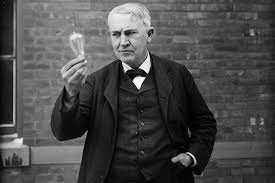

Thomas Edison
Thomas Edison, in full Thomas Alva Edison, (born February 11, 1847, Milan, Ohio, U.S.—died October 18, 1931, West Orange, New Jersey), American inventor who, singly or jointly, held a world-record 1,093 patents. In addition, he created the world’s first industrial research laboratory. Thomas Edison Thomas EdisonSee all videos for this article Edison was the quintessential American inventor in the era of Yankee ingenuity. He began his career in 1863, in the adolescence of the telegraph industry, when virtually the only source of electricity was primitive batteries putting out a low-voltage current. Before he died, in 1931, he had played a critical role in introducing the modern age of electricity. From his laboratories and workshops emanated the phonograph, the carbon-button transmitter for the telephone speaker and microphone, the incandescent lamp, a revolutionary generator of unprecedented efficiency, the first commercial electric light and power system, an experimental electric railroad, and key elements of motion-picture apparatus, as well as a host of other inventions.